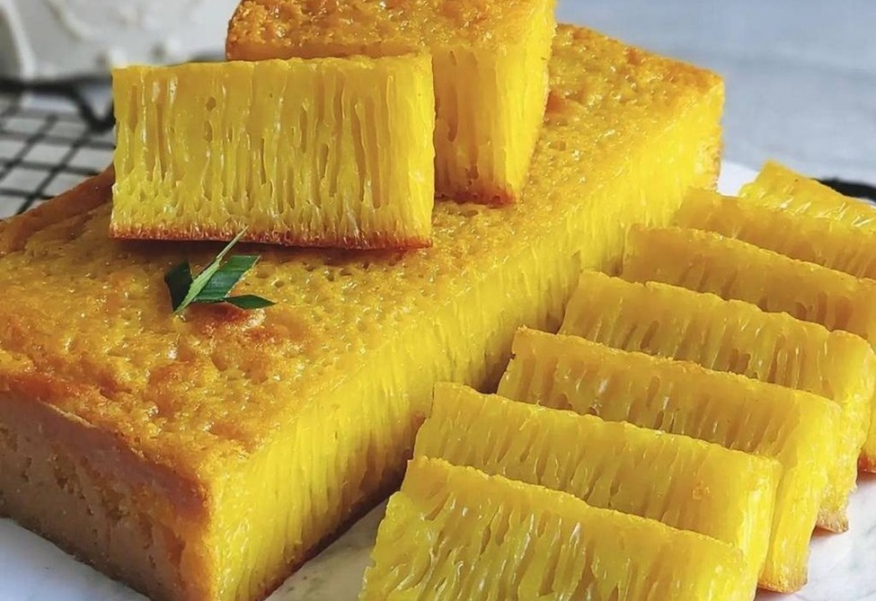
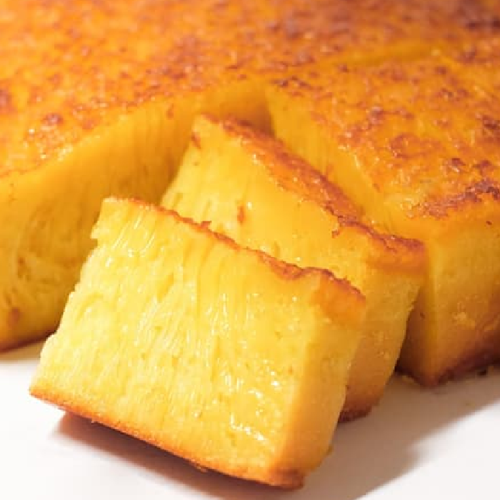
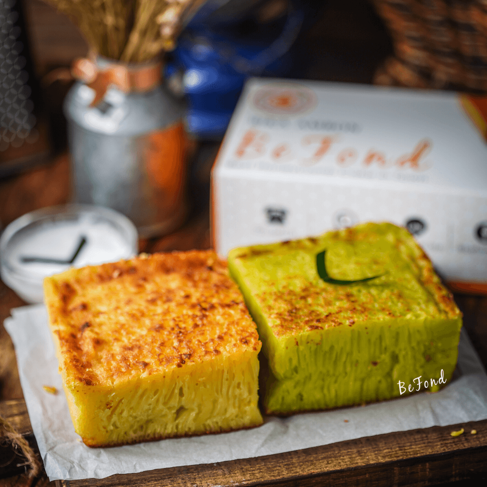
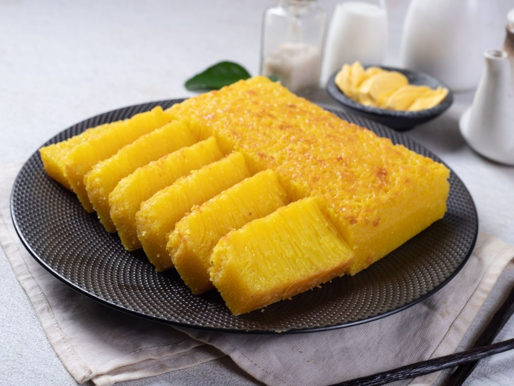

Belah
Rongganya.
ika Ambon bukan kue biasa, namanya menipu, asalnya dari Medan, dan teksturnya sengaja dibuat berlubang.
Rongga-rongga kecil itu bukan cacat, tapi tujuan. Terbentuk dari fermentasi alami air nira dan telur selama berjam-jam, lalu dipanggang perlahan di suhu rendah hingga bagian luar kecokelatan namun bagian dalam tetap kenyal berserat, seperti sarang lebah yang dipotong melintang.
“Namanya Ambon, rumahnya Medan, dan ia tak pernah malu soal itu.”
Tiga hal yang tak bisa ditiru sembarangan
Rongga Terukur
Fermentasi diawasi tiap jam agar pola sarang lebah terbentuk merata di setiap loyang.
Pandan-Kunyit Segar
Diperas langsung dari daun dan rimpang asli, bukan sirup instan atau pewarna buatan.
Api Kecil, Sabar Besar
Dipanggang lambat agar luar renyah, dalam tetap lembap, proses yang tak bisa dipercepat.
Sudut-sudut Rongganya




Dari Adonan ke Rongga
Fermentasi Alami
Air nira dan telur dibiarkan bereaksi hingga menghasilkan gelembung udara halus.
Campur Pandan & Kunyit
Warna dan aroma khas ditambahkan dari bahan segar yang diperas langsung.
Panggang Suhu Rendah
Rongga terbentuk perlahan tanpa merusak tekstur kenyalnya.
Potong & Sajikan
Dipotong hangat agar aroma pandannya masih terasa saat sampai ke kamu.